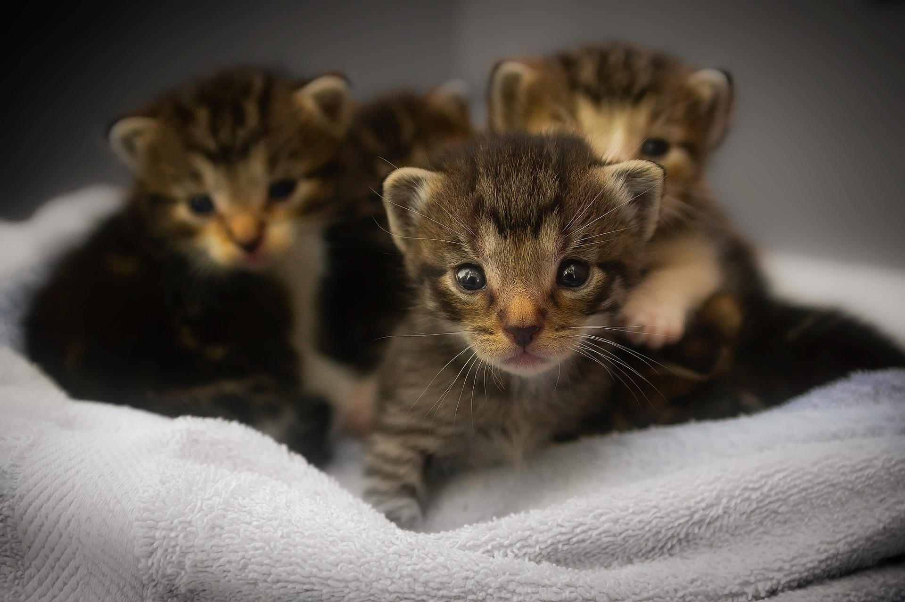
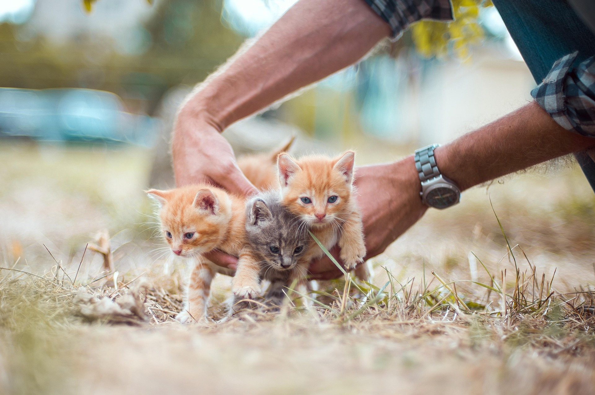
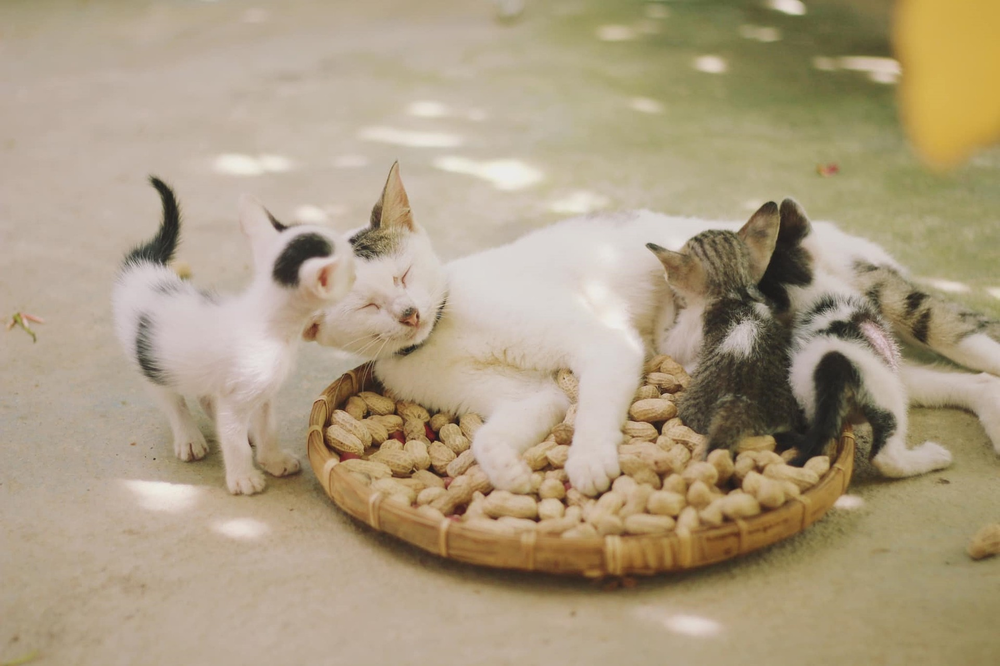

Una presentación súper cute sobre nuestros amiguitos peludos :3
¡Hola! Los gatitos han sido compañeros de los humanos desde hace muchísimos años. Se cree que los primeros gatos domésticos aparecieron hace más de 9.000 años en el Medio Oriente. ¡Eran unos exploradores valientes y suaves al mismo tiempo! Desde entonces, han conquistado corazones en todo el mundo con sus miradas tiernas y sus suaves patitas. (´｡• ᵕ •｡`) ♡

Un pequeño explorador de la historia ⋆˙⟡
Los gatitos tienen superpoderes de ternura: ojos grandes, orejitas puntiagudas, bigotes suaves y un maullido que derrite cualquier corazón. Les encanta jugar con ovillos de lana, cajas de cartón y perseguir luces. ¡Y cuando ronronean, el mundo se vuelve más feliz! Cada gatito tiene su propia personalidad única, desde los más traviesos hasta los más mimosos. (≧◡≦) ♡

¡Modo juego activado! ⋆˚࿔
Para que un gatito sea feliz necesita: mucho cariño, comida rica, agua fresca, un lugar calentito para dormir y juguetes para divertirse. También es importante llevarlo al veterinario y darle mucho amor todos los días. ¡Un gatito bien cuidado es un gatito que llena la casa de magia y ronroneos! Gracias por amar a los gatitos tanto como nosotros. (っ˘ω˘ς) ♡

Amor y cuidados para siempre ⋆.˚